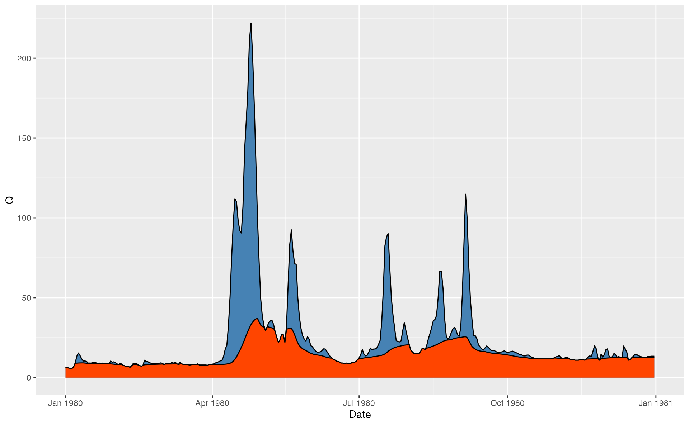
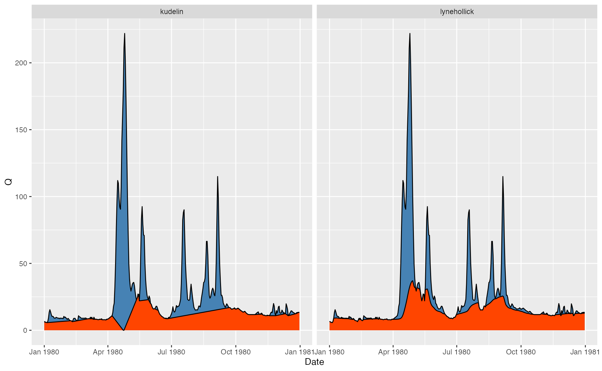

Extract baseflow from hydrological series using the filtering approach
Usage
gr_baseflow(
Q,
a = 0.925,
k = 0.975,
C = 0.05,
aq = -0.5,
passes = 3,
padding = 30,
method = "lynehollick"
)Arguments
- Q
Numeric runoff vector.
- a
Numeric value of a filtering parameter used in
'chapman','jakeman'and'lynehollick'methods. Defaults to0.925.- k
Numeric value of a filtering parameter used in
'boughton'and'maxwell'methods. Defaults to0.975.- C
Numeric value of a separation shape parameter used in
'boughton','jakeman'and'maxwell'methods- aq
Numeric value of a filtering parameter used in
'jakeman'method. Defaults to-0.5.- passes
Integer number of filtering iterations. The first iteration is forward, second is backward, third is forward and so on. Defaults to
3.- padding
Integer number of elements padded at the beginning and ending of runoff vector to reduce boundary effects. Defaults to
30.- method
Character string to set baseflow filtering method. Available methods are
'boughton','chapman','jakeman','lynehollick'and'maxwell'. Default is'lynehollick', which corresponds to Lyne-Hollick (1979) hydrograph separation method.
Examples
library(grwat)
library(ggplot2)
library(dplyr)
#>
#> Attaching package: ‘dplyr’
#> The following objects are masked from ‘package:stats’:
#>
#> filter, lag
#> The following objects are masked from ‘package:base’:
#>
#> intersect, setdiff, setequal, union
library(tidyr)
library(lubridate)
#>
#> Attaching package: ‘lubridate’
#> The following objects are masked from ‘package:base’:
#>
#> date, intersect, setdiff, union
data(spas) # example Spas-Zagorye data is included with grwat package
# Calculate baseflow using Line-Hollick approach
hdata = spas |>
mutate(Qbase = gr_baseflow(Q, method = 'lynehollick',
a = 0.925, passes = 3))
# Visualize for 1980 year
ggplot(hdata) +
geom_area(aes(Date, Q), fill = 'steelblue', color = 'black') +
geom_area(aes(Date, Qbase), fill = 'orangered', color = 'black') +
scale_x_date(limits = c(ymd(19800101), ymd(19801231)))
#> Warning: Removed 23376 rows containing non-finite outside the scale range
#> (`stat_align()`).
#> Warning: Removed 23376 rows containing non-finite outside the scale range
#> (`stat_align()`).

# Compare various approaches
hdata = spas |>
mutate(lynehollick = gr_baseflow(Q, method = 'lynehollick', a = 0.9),
boughton = gr_baseflow(Q, method = 'boughton', k = 0.9),
jakeman = gr_baseflow(Q, method = 'jakeman', k = 0.9),
maxwell = gr_baseflow(Q, method = 'maxwell', k = 0.9)) |>
pivot_longer(lynehollick:maxwell, names_to = 'Method', values_to = 'Qbase')
# Visualize for 1980 year
ggplot(hdata) +
geom_area(aes(Date, Q), fill = 'steelblue', color = 'black') +
geom_area(aes(Date, Qbase), fill = 'orangered', color = 'black') +
scale_x_date(limits = c(ymd(19810101), ymd(19811231))) +
facet_wrap(~Method)
#> Warning: Removed 93508 rows containing non-finite outside the scale range
#> (`stat_align()`).
#> Warning: Removed 93508 rows containing non-finite outside the scale range
#> (`stat_align()`).
# Compare Lyne to Kudelin
p = gr_get_params('center')
p$filter = 'kudelin'
hdata = spas |>
mutate(lynehollick = gr_baseflow(Q, method = 'lynehollick',
a = 0.925, passes = 3),
kudelin = gr_separate(spas, p)$Qbase) |>
pivot_longer(lynehollick:kudelin, names_to = 'Method', values_to = 'Qbase')
#> grwat: data frame is correct
#> grwat: parameters list and types are OK
# Visualize for 1980 year
ggplot(hdata) +
geom_area(aes(Date, Q), fill = 'steelblue', color = 'black') +
geom_area(aes(Date, Qbase), fill = 'orangered', color = 'black') +
scale_x_date(limits = c(ymd(19800101), ymd(19801231))) +
facet_wrap(~Method)
#> Warning: Removed 46752 rows containing non-finite outside the scale range
#> (`stat_align()`).
#> Warning: Removed 46752 rows containing non-finite outside the scale range
#> (`stat_align()`).
